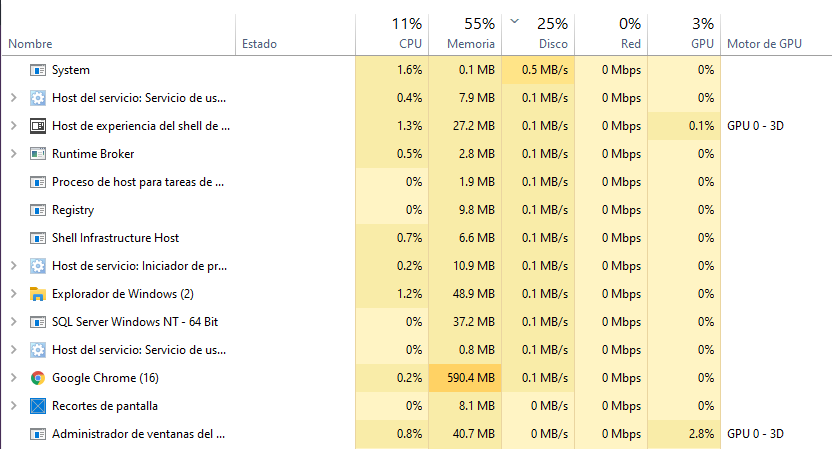

Sistemas de sincronización entre hilos sobre Windows
Los semáforos limitan la ejecución simultánea de un código (procedimiento, línea de código, etc.) a uno o más hilos en un momento dado. Un semáforo se puede compartir entre varias aplicaciones.
Un objeto mutex es un objeto de sincronización cuyo estado se establece en señalado cuando no es propiedad de ningún subproceso y no señalado cuando sí lo es. Solo un subproceso a la vez puede poseer un objeto mutex, cuyo nombre proviene del hecho de que es útil para coordinar el acceso mutuamente excluyente a un recurso compartido. Por ejemplo, para evitar que dos subprocesos escriban en la memoria compartida al mismo tiempo, cada subproceso espera la propiedad de un objeto mutex antes de ejecutar el código que accede a la memoria. Después de escribir en la memoria compartida, el subproceso libera el objeto mutex.
Una de las herramientas más importantes que nos ofrece Microsoft en sus Sistemas Operativos Windows, tanto de hogar como a nivel empresarial, es sin dudas el visor de eventos ya que desde esta herramienta tenemos acceso a todos los sucesos que han acontecido en el Sistema Operativo durante todo el tiempo de actividad.
El bloqueo más común en el kernel de Linux es un bloqueo giratorio.Los spinlocks pueden mantenerse como
máximo
por un hilo ejecutable. Si un subproceso de ejecución intenta adquirir un bloqueo de giro que ya está
retenido,
el subproceso continuará haciendo un giro de bucle ocupado esperando que el bloqueo vuelva a estar
disponible.
Si el bloqueo no está en disputa, el hilo en ejecución que solicita el bloqueo puede obtenerlo
inmediatamente
y continuar la ejecución. En cualquier momento, un bloqueo de giro puede evitar que más de un hilo de
ejecución
entre en la sección crítica al mismo tiempo.
Un spinlock en disputa hace que el hilo solicitante gire mientras espera que el bloqueo vuelva a estar
disponible
(especialmente perdiendo el tiempo del procesador). Este comportamiento es el punto principal de un
spinlock.
Los controladores para Microsoft Windows XP y versiones posteriores de Windows pueden usar
KeAcquireInStackQueuedSpinLock y KeReleaseInStackQueuedSpinLock para adquirir y liberar el
bloqueo de giro como un bloqueo de giro en cola. Los bloqueos
de giro en cola proporcionan un mejor rendimiento que los bloqueos de giro ordinarios para bloqueos de
alta contención en
máquinas multiprocesador. Para obtener más información, consulte Bloqueos de giro en cola. Los
controladores para Windows
2000 pueden usar KeAcquireSpinLock y KeReleaseSpinLock para adquirir y liberar un bloqueo giratorio como
un bloqueo giratorio normal.
Las secciones criticas son ampliamente conocidas por los desarrolladores de windows en lenguajes como C y C++, estas proveen el acceso exclusivo a una porción de código ubicada entre "EnterCriticalSection" y "LeaveCriticalSection", aunque también a menudo causan dolores de cabeza con los deadlocks producto tanto de olvidos en el código como de posibles fallos del mismo.
Sistemas de sincronización entre hilos sobre Windows

1 Varias aplicaciones
Para este caso se invento la multiprogramación, esto para permitir que el tiempo de procesador de la máquina fuese compartido dinámicamente entre varios trabajos o aplicaciones activas. No necesito tener abierto Word para poder escuchar musica ¿O si?, cada programa en este caso es independiente del otro.
Second slide label
Some representative placeholder content for the second slide.
Third slide label
Some representative placeholder content for the third slide.